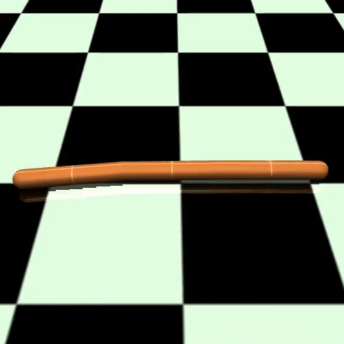
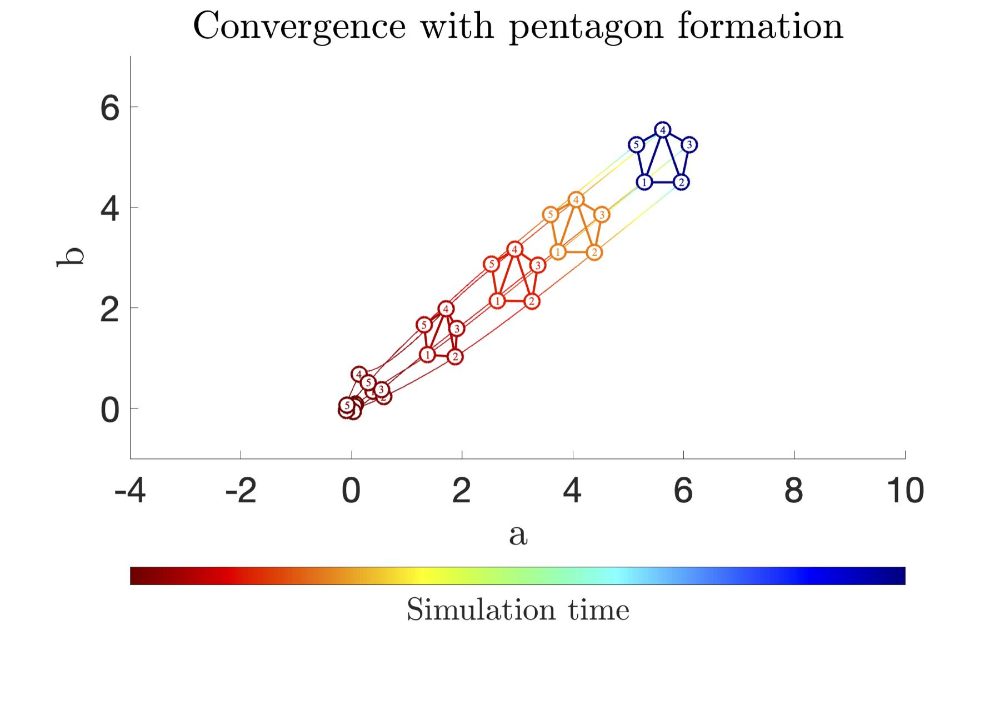
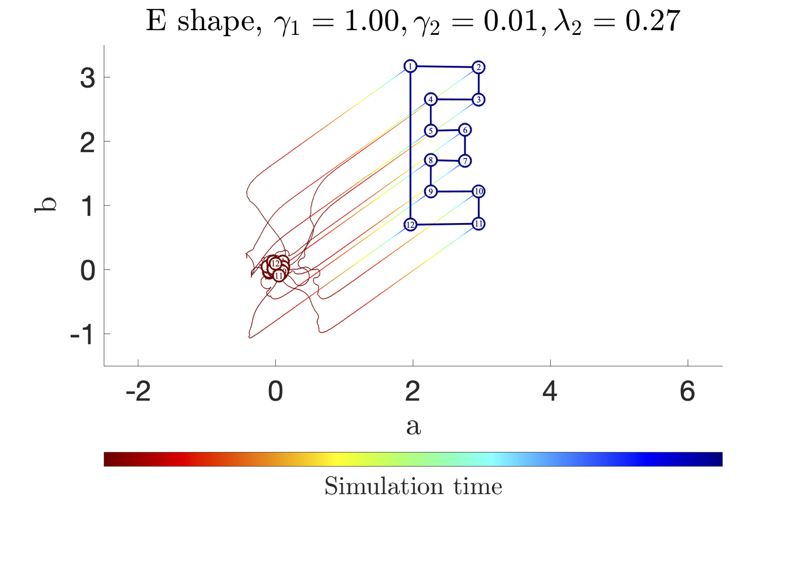
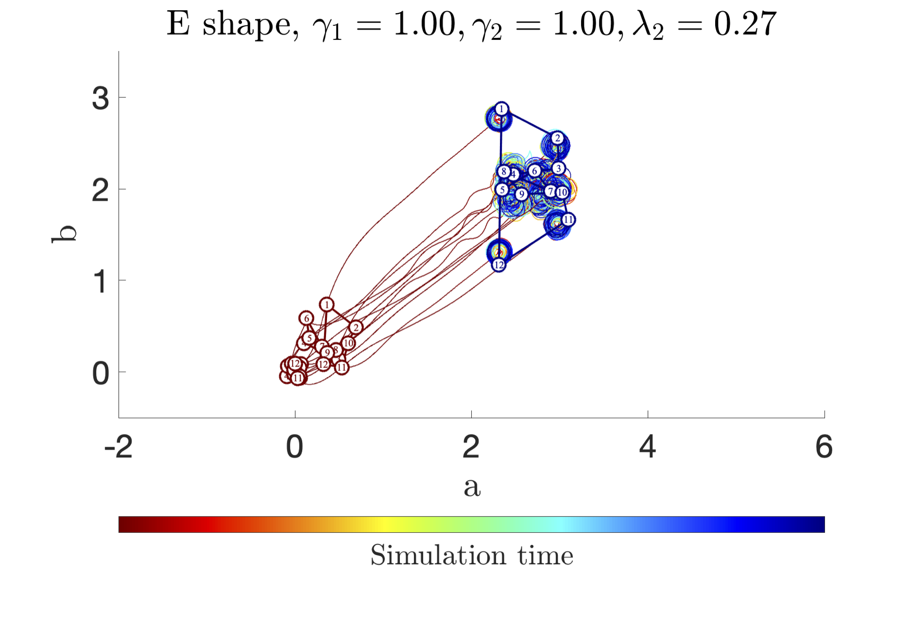

Science 📝.
It took a while, but we finally delivered our new baby: #DynamicProgramming in Probability Spaces via #OptimalTransport : https://t.co/AibDCxodZq
— Florian Dörfler (@florian_dorfler) February 28, 2023
For such general problems without any assumptions (no linearity, convexity, continuity, ...), you don't expect elegant results. 1/2
Dynamic Programming in Probability Spaces via Optimal Transport
A. Terpin*, N. Lanzetti*, and F. Dörfler.
Working paper, 2023.
Separation principles are ubiquitous in control theory owing to their practical attractiveness. This paper establishes a new dimension in this spectrum: A separation principle between the agent and the fleet.
How to measure the closeness between policies in #RL?
— Giorgia Ramponi (@gio_ramponi) November 8, 2022
In our #neurips paper, we use Optimal Transport to define Trust Regions for efficient and stable Policy Optimization... and it works!
with @antonio_terpin, Nicolas Lanzetti and @florian_dorfler https://t.co/IwBC3xu0kf
Trust Region Policy Optimization with Optimal Transport Discrepancies: Duality and Algorithm for Continuous Actions
A. Terpin*, N. Lanzetti*, B. Yardim, F. Dörfler, and G. Ramponi.
36th Conference on Neural Information Processing Systems (NeurIPS), 2022.



Distributed Feedback Optimisation for Robotic Coordination
A. Terpin, S. Fricker, M. Perez, M. Hudoba de Badyn, and F. Dörfler.
American Control Conference (ACC), 2022



We are releasing the source code of EVO, our monocular Event-based Visual Odometry described in the RAL'17 paper! We hope this code will help novice researchers to enter the exciting field of #eventcamera #SLAM! Code, data, paper: https://t.co/RJff5XLGso@DanielGehrig6 @supitalp pic.twitter.com/CSbGJV1y9v
— Davide Scaramuzza (@davsca1) July 8, 2021
Open Sourcing of Event-based Visual Odometry (EVO)
A. Terpin, D. Gehrig, and D. Scaramuzza.
The event-based visual odometry pipeline described in EVO: A Geometric Approach to Event-Based 6-DOF Parallel Tracking and Mapping in Real-time by H. Rebecq, T. Horstschaefer, G. Gallego, and D. Scaramuzza.